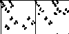

| Not all data are written in an alphabet of four symbols. Can we adapt the driven IFS method to study a wider variety of data, daily closing stock prices, for example? The answer is yes. As a first step, we must coarse-grain the data. | |
| Here are some examples of student projects using financial data. | |
|
Here are some examples of attempts to study texts by driven IFS. |
| Here are some examples of sequences of proteins ordered by molecular weight. | |
|  | Finally, here we interpret some of these examples to try to estimate the depth of history of the underlying processes. |
Return to Driven IFS.